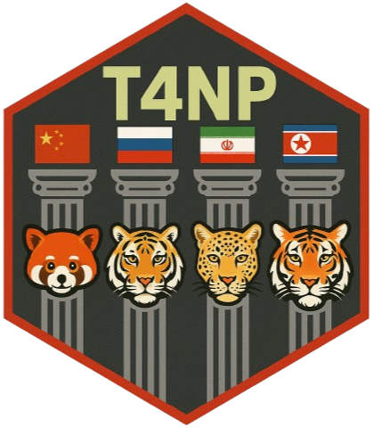

THE 4 NOBLE PILLARS // SOURCE PROTECTION
T4NP
T4NP is a preventative source-code protection suite that thwarts exfiltration and theft by embedding jurisdiction-aware encoding and indexing layers (native-illegal index schemes) that resist automated parsing and compliant reuse in high-risk jurisdictions (PRC, Russia, DPRK, Iran).
INTERNAL – Not for public distribution. The browser implementation focuses on defensive release controls, provenance, checksums, and explicit distribution policy. It does not damage source code, execute remotely, collect credentials, or plant hidden persistence.
Files0
Bytes0
HashSHA-256
Remote executionOFF
| File | Bytes | SHA-256 |
|---|